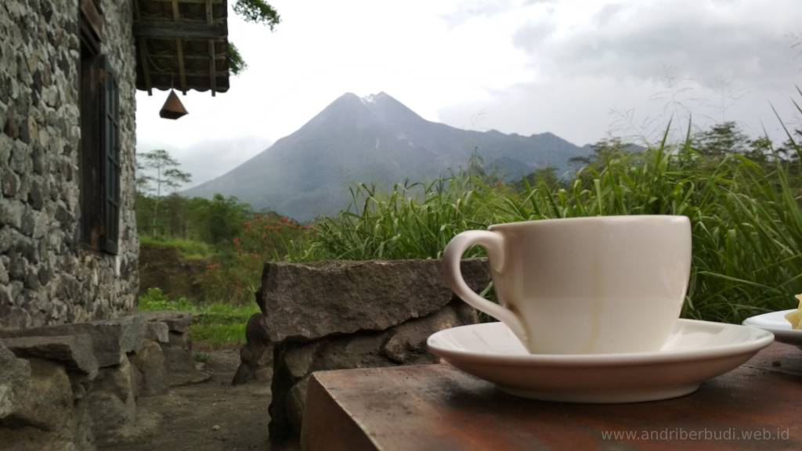
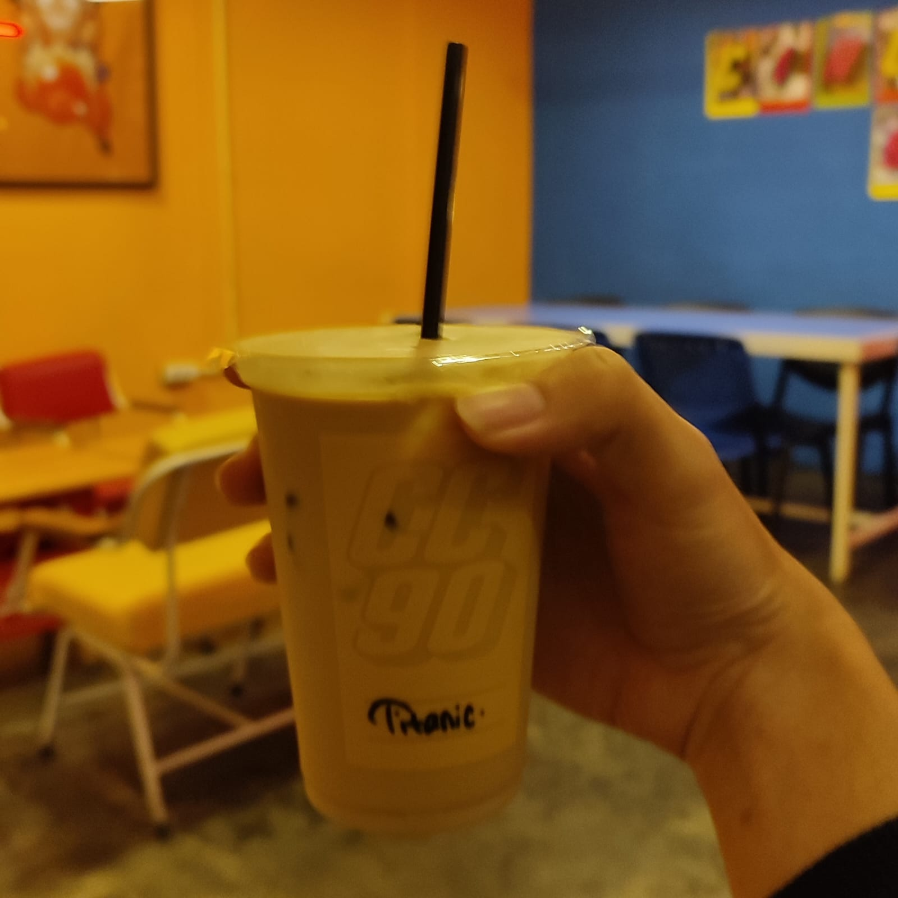
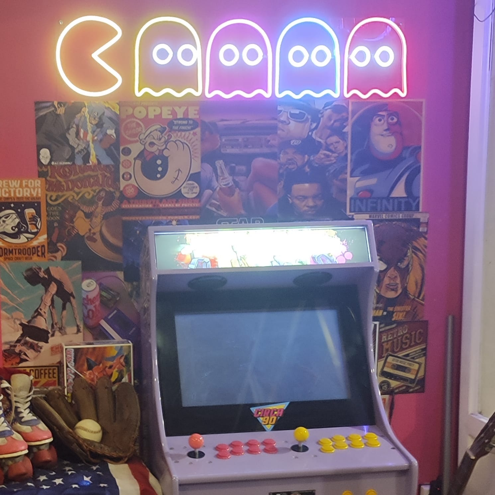
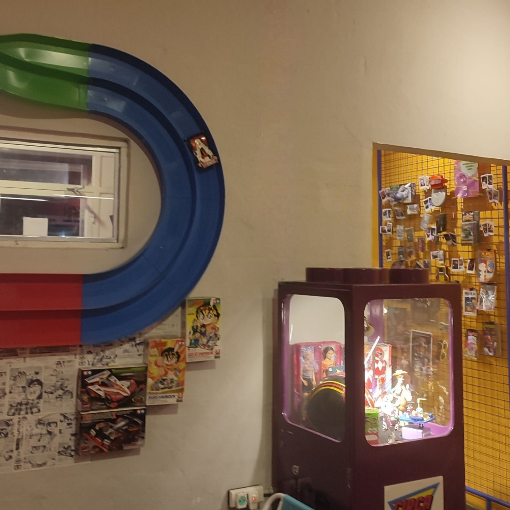
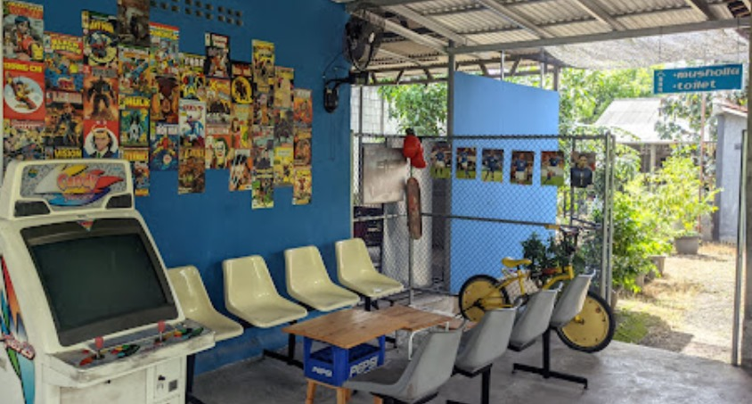
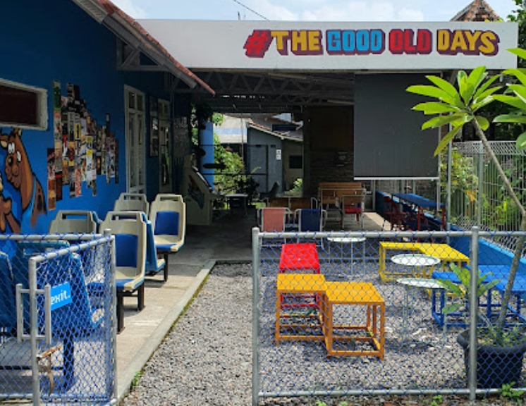

Kopi menurut wikipedia
Kopi menurut wikipedia
Kopi /Coffea
Kopi adalah minuman yang diseduh dari biji kopi yang telah digiling. Biji kopi berasal dari tanaman kopi yang tumbuh di daerah-daerah tropis di seluruh dunia. Proses pembuatan kopi melibatkan pemanggangan biji kopi yang memberikan berbagai macam cita rasa dan aroma yang khas.Setelah dipanggang, biji kopi dapat digiling dan diseduh dengan berbagai cara, seperti diseduh dengan air panas dalam metode seperti penyaringan, pembuatan espresso, atau berbagai metode lainnya. Kopi biasanya diminum sebagai minuman kafein yang mengandung stimulan, dan banyak diminati karena rasanya yang kaya dan aroma yang menyegarkan. Kopi juga memiliki berbagai jenis, seperti kopi arabika dan robusta, yang memiliki perbedaan dalam cita rasa, aroma, dan karakteristik lainnya.
Nama ilmiah untuk tanaman kopi adalah Coffea. Tanaman ini termasuk dalam keluarga Rubiaceae dan memiliki beberapa spesies yang paling dikenal adalah Coffea arabica dan Coffea canephora (juga dikenal sebagai Coffea robusta).Dan ada beberapa jenis kopi juga yang banyak dikonsumsi yaitu :
Kopi Merapi tidak hanya sekadar minuman, tetapi sebuah cerita tentang keindahan alam dan perjuangan manusia. Berlokasi di lereng Gunung Merapi di Yogyakarta, kopi ini memikat dengan citarasa khasnya yang dipenuhi aroma bunga dan rempah.
Selain menawarkan nikmatnya kopi, tempat-tempat penyajian kopi di sekitar Yogyakarta juga menawarkan pemandangan alam yang menakjubkan. Jika Anda berkesempatan, jangan lewatkan untuk mencicipi secangkir kopi Merapi dan merasakan sensasi ngopi dengan view gunung Merapi.
Link Maps Kopi Merapi
📍Kopi Merapi YogyakartaCirca 90 Cafe adalah cafe yagn bernuansa tahun 90-an yang dimana kita dibawa seperti bernostalgia pada zaman 90-an.Seperti ada mesin arcade,Majalah jadul ,mobil tamiya dan hal-hal yang berbau pada zaman 90-an.
    Selain menawarkan sensai pada tahun 90-an, Circa 90 Cafe juga menyajian makanan fast Food, minumana soda hingga kopi.Jika Anda berkesempatan, jangan lewatkan untuk menikmati cafe yang bernuansa tahun 90-an secangkir kopi Merapi dan merasakan sensasi retro.
Link Maps Circa 90 Cafe
📍Circa 90 Cafe